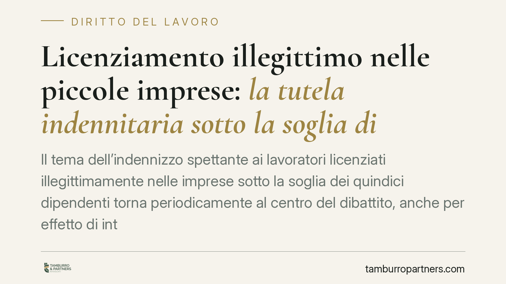

Licenziamento illegittimo nelle piccole imprese: la tutela indennitaria sotto la soglia dimensionale
Il tema dell'indennizzo spettante ai lavoratori licenziati illegittimamente nelle imprese sotto la soglia dei quindici dipendenti torna periodicamente al centro del dibattito, anche per effetto di interventi della Corte costituzionale. Prima di dare per acquisita qualsiasi novità giurisprudenziale occorre però distinguere con precisione le fonti applicabili e verificare gli estremi delle pronunce citate.

Il fatto e una premessa necessaria
Negli ultimi anni la disciplina del licenziamento nelle piccole imprese è stata più volte oggetto di attenzione, anche a seguito di interventi della Corte costituzionale sui criteri di quantificazione dell'indennità risarcitoria.
Una avvertenza preliminare è doverosa. Alcune notizie di stampa hanno riferito di una pronuncia della Consulta (indicata come sentenza n. 174/2026) che avrebbe esteso a tutti i lavoratori delle piccole imprese determinate maggiorazioni dell'indennità. Allo stato non siamo in grado di confermare, tramite fonti ufficiali (sito della Corte costituzionale e Gazzetta Ufficiale), gli estremi di tale decisione. Per questa ragione trattiamo la questione sul piano del diritto vigente e consolidato, rinviando ogni valutazione sugli effetti di una nuova sentenza alla sua effettiva pubblicazione e lettura integrale. Su un sito professionale non si commentano norme o decisioni di cui non sia verificata l'esistenza.
Inquadramento normativo
La cosiddetta tutela obbligatoria si applica, in linea di principio, ai datori di lavoro che non raggiungono le soglie dimensionali previste per la tutela reintegratoria (indicativamente oltre quindici dipendenti nell'unità produttiva o nel Comune, oltre sessanta complessivi).
Per i rapporti sorti prima del 7 marzo 2015 (data di entrata in vigore del d.lgs. n. 23/2015, cosiddetto Jobs Act) resta applicabile l'art. 8 della legge n. 604/1966, nella formulazione risultante dalle modifiche successive. La norma prevede che il datore, in caso di licenziamento dichiarato privo di giusta causa o giustificato motivo, sia tenuto a riassumere il lavoratore entro tre giorni oppure, in alternativa, a corrispondere un'indennità compresa, di regola, tra 2,5 e 6 mensilità dell'ultima retribuzione globale di fatto, misura determinata dal giudice tenendo conto del numero dei dipendenti, delle dimensioni dell'impresa, dell'anzianità di servizio e del comportamento delle parti.
È importante un chiarimento tecnico, spesso fonte di confusione. Le maggiorazioni fino a 10 mensilità (per anzianità superiore a dieci anni) e fino a 14 mensilità (per anzianità superiore a venti anni, in imprese sopra una certa dimensione) non derivano dall'art. 8 L. 604/1966: trovano la loro collocazione storica nell'art. 18 dello Statuto dei lavoratori nella versione anteriore alla riforma Fornero (L. n. 92/2012). Attribuire quelle soglie direttamente all'art. 8 è un errore ricorrente che consigliamo di evitare nella valutazione del caso concreto.
Per i rapporti sorti dopo il 7 marzo 2015 opera invece il regime del d.lgs. n. 23/2015, con criteri di calcolo autonomi, anch'essi incisi da interventi della Corte costituzionale (tra cui la nota sentenza n. 194/2018, che ha dichiarato illegittimo il criterio rigidamente ancorato alla sola anzianità).
Implicazioni pratiche
Per il lavoratore la posta in gioco è la corretta individuazione del regime applicabile, che dipende essenzialmente dalla data di assunzione e dalla dimensione dell'impresa. Da questa qualificazione discende l'entità dell'indennità ottenibile.
Quanto agli effetti di eventuali pronunce di incostituzionalità, vale un principio noto ma da maneggiare con cautela: la declaratoria di illegittimità opera di regola sui rapporti ancora pendenti, cioè sui giudizi in corso e sulle situazioni non ancora consolidate. Restano invece esclusi i rapporti esauriti, ossia quelli definiti con sentenza passata in giudicato o nei quali i diritti si siano estinti per prescrizione o decadenza. Chi ritiene di poter beneficiare di un orientamento più favorevole deve quindi verificare in via prioritaria di non essere incorso in decadenze.
Per il datore di lavoro sotto soglia, la corretta ricostruzione del regime applicabile incide sulla gestione del contenzioso e sulla stima del rischio economico di un recesso contestato.
Cosa fare in concreto
- Verificate la data di assunzione e la dimensione dell'impresa: sono i due elementi che determinano quale disciplina (L. 604/1966 o d.lgs. 23/2015) si applica.
- Rispettate i termini di impugnazione: il licenziamento va contestato per iscritto entro 60 giorni dalla ricezione; l'azione giudiziale (o il tentativo di conciliazione) va promossa entro i successivi 180 giorni, a pena di decadenza.
- Conservate la documentazione: lettera di licenziamento, buste paga e comunicazioni utili a provare retribuzione e anzianità.
- Prima di invocare una sentenza recente, accertatene gli estremi tramite fonti ufficiali e leggetene la motivazione integrale.
- Richiedete una valutazione individuale del caso: la quantificazione dipende da variabili non riducibili a schemi automatici.
Disclaimer
Contributo informativo a cura di Tamburro & Partners – Avv. Giuseppe Tamburro. Non costituisce parere legale.
Ogni storia di lavoro ha i suoi tempi.
Se gestisci HR e vuoi un confronto su contenzioso, ispezioni o licenziamenti, scrivi allo studio. Ti rispondiamo entro un giorno lavorativo.